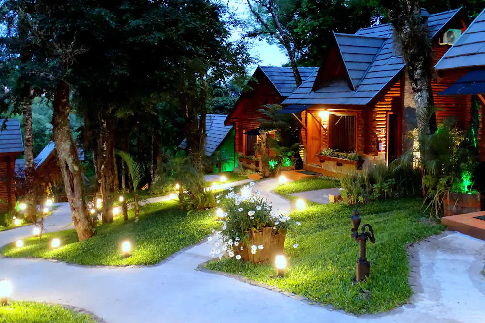
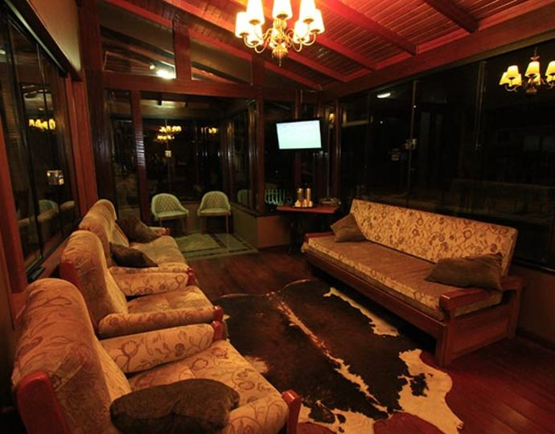

O que o Recanto da Natureza tem para lhe oferecer
Situada em local privilegiado pela natureza, próximo aos principais pontos turísticos da cidade, na subida do Lago Negro, a Pousada Gramado, atendida pelo proprietários, reúne as qualidades de um serviço personalizado que farão de sua hospedagem um momento inesquecível.
Serviços Oferecidos
- - 26 apartamentos divididos em Luxo, Luxo Especial e Luxo Conjugado;
- - Sala de TV;
- - Internet wi-fi em todas as dependências da pousada, sem custo adicional;
- - Café da Manhã em estilo colonial da região;
- - Ambientes tranquilos e aconchegantes;
- - Estacionamento fechado e privativo.
Contatos
Telefone:(53)3024-5785
WhatsApp: (53)98454-7565
Endereço
R. Gonçalves Chaves, 602 - Centro, Pelotas - RS, 96015-560